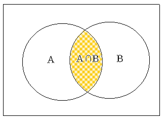
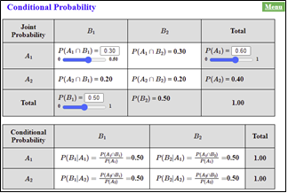
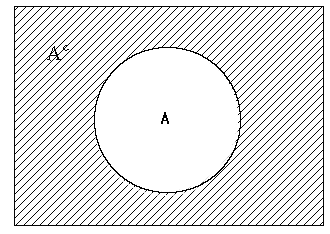

In order to calculate the probability of an event in a discrete sample space, the number of elements in the sample space and the number of elements included in the event should be counted. If all possible outcomes of the sample space is not large, the probability can be simply calculated, but it is generally not easy to count the number of all possible outcomes. Effective methods for counting the number of complex cases include the permutation and combination.
Chapter 5. Probability Distribution
5.2 Calculation of Probability
[presentation] [video]
Permutation
The number of cases to select r objects out of n objects considering the order is called the permutation and is calculated as follows: $$ _{n} P_{r} = n (n-1) (n-2) \cdots (n-r+1) = \frac {n!} {(n-r)!} $$ Therefore, the number of cases to list all n objects is as follows: $$ _{n} P_{n} = n(n-1)(n-2) \cdots 2 \cdot 1 = n! $$ Note: 0! = 1
Combination
The number of cases to select r objects out of n objects without considering the order is called the combination and is calculated as follows. $$ _{n} C_{r} = \frac { _{n} P_{r} } {r!} = \frac {n!} {r!(n-r)!} $$
Example 5.2.1
Four people A, B, C and D are intended to be placed on four side-by-side chairs. Calculate the total number of cases in which four people are placed, and the number of cases in which A is placed on the leftmost. What is the probability that A is placed on the leftmost side?
Answer
The number of elements in the sample space in this example is as follows. $$ \small \begin{multline} \shoveleft\text { (number of people that can be placed on the leftmost) } × \\ \shoveleft\text { (number of people except left who can be placed in the second position) } × \\ \shoveleft\text { (number of people who can be placed in the third place except for two left people) } × \\ \shoveleft\text { (number of people, excluding the three on the left, who can be positioned to the right) } \\ \shoveleft = 4 × 3 × 2 × 1 = 4! = 24 \end{multline} $$ The event in which A is placed on the left is the number of people placed in the second, third, and right positions except A, so 3×2×1 = 3!. Therefore, the probability that A will be placed to the left is as follows.
\( \qquad \small \frac {3!} {4!} = \frac {6} {24} = 0.25 \)
Example 5.2.2
A company has four security guards (A, B, C, D). Each morning, two of these guards are randomly selected, one at the front gate and the other at the rear guard. Obtain the total number of cases in which four people are placed at the front and rear gates and the number of cases in which A is placed at the front gate. What is the probability that A will be placed at the front gate?
Answer
The number of elements in the sample space in this problem is as follows.
\( \qquad \small \text { (number of people who can be placed at the front gate) } × \)
\( \qquad \small \text { (number of people who can be placed in the rear except those placed in the front) } \)
\( \qquad \small = 4 × 3 = {}_{4}P_{2} = 12 \)
The number of elements in the event where A will be placed at the front gate is \( _{3} P_{1} = 3 \), since A can be placed at the front gate and one of the other three can be placed at the rear gate. That is, the probability that A will be placed at the front gate one day is as follows.
\( \qquad \small \frac { {}_{3}P_{1}} { {}_{4}P_{2}} = \frac {3 \times 1} {4 \times 3} = \frac {1} {4} \)
There are several calculation rules for calculating complex probabilities other than the permutation and the combination. Let us consider the examples below to explain the rules.
Example 5.2.3
Out of 40 sophomores in a Statistics Department this semester, 25 students are taking Economics, 30 students are taking Political Science and 20 students are taking both courses. When I meet one of the sophomores, what is the probability of this student taking either Economics or Political Science (that is one or both)?
Answer
Since there are 25 students who take Economics and 20 students taking both courses, 25 - 20 = 5 students take only Economics. Also, since there are 30 students who take Political Science, 30 - 20 = 10 students take only Political Science. Thus, as shown in <Figure 5.2.1>, the number of students taking either Economics or Political Science is 5 + 10 + 20 = 35. Therefore, the probability of students taking either Economics or Political Science is 35 / 40.

<Figure 5.2.1> Students who take either economics or political science
Consider the case of students taking both Economics (A) and Political Science (B). The event that a student takes both courses are denoted as A ∩ B and is called an intersection event of A and B (<Figure 5.2.2>).

<Figure 5.2.2> Intersection events A ∩ B
The event that a student takes either Economics or Political Science (one or both) is denoted as A ∪ B and is called an union event of A and B (<Figure 5.2.3>).

<Figure 5.2.3> Union Event A ∪ B
Probabilities of these events on this example are as follows:
P(A) = 25 / 40 = 0.625
P(B) = 30 / 40 = 0.750
P(A ∩ B) = 20 / 40 = 0.500
P(A ∪ B) = 35 / 40 = 0.875
P(B) = 30 / 40 = 0.750
P(A ∩ B) = 20 / 40 = 0.500
P(A ∪ B) = 35 / 40 = 0.875
The probability of P(A ∪ B) can also be calculated as follows if you look at the <Figure 5.2.1>.
P(A ∪ B) = P(A) ＋ P(B) － P(A ∩ B) = 25/40 ＋ 30/40 － 20/40 = 0.625 + 0.750 - 0.500 = 0.875
That is, the probability of taking either Economics or Political Science, P(A ∪ B), can be calculated by adding the probability of taking each course and then by subtracting the probability of taking both courses.
[Addition Rule of Probability]
| P(A) = | 0.00 | 1.00 | ||
| P(B) = | 0.00 | 1.00 | ||
| P(A ∩ B) = |
The rule discussed on [Example 5.2.3] is called the addition rule of probability.
Addition Rule of Probability
$$\ P(A ∪ B) = P(A) + P(B) - P(A ∩ B) $$
If A ∩ B = ∅, then the rule becomes as follows:
$$ P(A ∪ B) = P(A) + P(B)$$
In this case, the events A and B are called mutually exclusive events.
Example 5.2.4
In [Example 5.2.3], if there are 10 students taking Economics, 20 students taking Political Science, and if there are no students taking both courses, what is the probability of a student is taking either Economics or Political Science?
Answer
In this case, because there are no students taking both courses, the events in which they take Economics (A) and Political Science (B) are mutually exclusive. Thus, the probability to take either Economics or Political Science, P(A U B), is as follows:
P(A U B) = P(A) + P(B) = 10/40 + 20/40 = 0.75
Let us consider the example below to find out the multiplication rule of probability.
Example 5.2.5
Students of ADA University come from either Baku or a province. Among the 30 sophomores in the Department of Economics, there are 10 males and 20 females, one of males and five of females are from the province.
1) When selecting a student, what is the probability that the student is from the province?
2) When I selected a student, the student was female. What is the probability that this student is from the province?
3) When I selected a student, the student was from the province. What is the probability of this student being a male?
4) When selecting a student, what is the probability that the student is male and from Baku?
Answer
To solve this problem, it is convenient to organize the information given into a cross table as shown below.
| Baku | Province | Total | |
|---|---|---|---|
| Male | 1 | 10 | |
| Female | 5 | 20 | |
| Total | 24 | 6 | 30 |
If we calculate and insert the blanks on the above table, it is as follows. Let us call the event of male as M, the female as F, from Baku as B, from the province as C.
| Baku(B) | Province(C) | Total | |
|---|---|---|---|
| Male(M) | 9 | 1 | 10 |
| Female(F) | 15 | 5 | 20 |
| Total | 24 | 6 | 30 |
1) \(\small P(C) = \) 6/30.
2) The probability that this student is from the province among females is 5/20. This probability is denoted as \(\small P(C∣F) \) and is called a conditional probability.
3) The probability of a male from the province is \(\small P(M∣C) = \) 1/6.
4) The probability is \(\small P(M ∩ B) \) and the cross table shows that the answer is 9/30. Alternatively, the probability of being a male among all students can be first obtained as \(\small P(M) = \) (10/30) and then multiplied by the conditional probability of being from Baku among males, \(\small P(B∣M) \) = 9/10. Namely
\( \qquad \small P(M ∩ B) = P(M) P(B∣M) = (10/30) \times (9/10) = 9/30 \)
This expression shows that the conditional probability \(\small P(B∣M) \) can be calculated by dividing \(\small P(M ∩ B) \) by \(\small P(M) \).
\( \qquad \small P(B ∣ M) = \frac {P(M ∩ B)} {P(M)} = \frac { 9/30} {10/30} = \frac {9} {10} \)
In addition, the probability \( \small P(M ∩ B) \) can be obtained first by the probability of being a student from Baku, \(\small P(B) = \) 24/30, and then multiplied by the probability of being a male from Baku (\(\small P(M∣B) = \) 9/24).
\( \qquad \small P(M ∩ B) = P(B) P(M∣B) = (24/30) × (9/24) \)
[Multiplication Rule of Probability]
You can calculate the conditional probabilities and their graphs using eStat as follows:
| \(B_1\) | \(B_2\) | ||||||||
| \(A_1\) |
\( P(A_1 ∩ B_1 )\) =
|
\( P(A_1 ∩ B_2 )\) = |
\( P(A_{1})\) =
|
||||||
| \(A_2\) | \( P(A_2 ∩ B_1 )\) = | \( P(A_2 ∩ B_2 )\) = | \( P(A_{2})\) = | ||||||
\( P(B_{1})\) =
|
\( P(B_{2})\) = |
| \(B_1\) | \(B_2\) | ||
| \(A_1\) | \( P(B_1 | A_1 ) = \frac{P(A_1 ∩ B_1 )}{P(A_{1}) } = \) | \( P(B_2 | A_1 ) = \frac{P(A_1 ∩ B_2 )}{P(A_{1}) } = \) | 1.00 |
| \(A_2\) | \( P(B_1 | A_2 ) = \frac{P(A_2 ∩ B_1 )}{P(A_{2}) } = \) | \( P(B_2 | A_2 ) = \frac{P(A_2 ∩ B_2 )}{P(A_{2}) } = \) | 1.00 |
<Figure 5.2.4> Graph of joint probabilities and their conditional probability
If you adjust the joint probability as \(P(A_1 \cap B_1 )\) = 0.300, \(P(A_1 )\) = 0.600 and \(P(B_1 )\) = 0.500,, then the conditional probability becomes as in <Figure 5.2.5>. <Figure 5.2.6> displays a line graph and conditional probability in case of independent events.

<Figure 5.2.5> Probabilities when two variables are independent

<Figure 5.2.6> Line graph and conditional probabilities when two variables are independent.
Conditional probability is generally defined as follows.
Conditional Probability
$$ \small P(A ∣ B) = \frac {P(A ∩ B)} {P(B)} \qquad \qquad \textrm{if} \quad P(B) ≠ 0 $$
In the above example, the probability of an intersection event is expressed by multiplying the probabilities of other events and it is called the multiplication rule of probability.
Multiplication Rule of Probability
$$ \small P(A ∩ B) = P(A) P(B∣A) $$ If \(\small P(B∣A) = P(B) \), then the rule becomes as follows: $$ \small P(A ∩ B) = P(A) P(B) $$ In this case, the events \(\small A\) and \(\small B\) are called independent events.
Example 5.2.6
Tiger team of professional baseball has the probability of 0.7 to beat Lion team recently. What is the probability that Tiger is winning both games in this evening’s double match? Assume that winning one game does not affect winning the next.
Answer
Let us call the event that the Tiger wins the first game is \(\small A\) and the event that the Tiger wins the second game is \(\small B\). Since A and B are independent of each other, the probability that the Tiger is winning both games is as follows.
\( \qquad \small P(A ∩ B) = P(A) P(B) = 0.7 × 0.7 = 0.49 \)
Example 5.2.7
The following is a table of 30 second-year students by gender and region of origin. Are the events of male and Baku origin independent of each other?
| Baku(B) | Province(C) | Total | |
|---|---|---|---|
| Male(M) | 5 | 5 | 10 |
| Female(F) | 10 | 10 | 20 |
| Total | 15 | 15 | 30 |
Answer
Let us call the event of male as \(\small M \), female as \(\small F\), from Baku as \(\small B\), and from province as \(\small C \). From the table, probabilities of \(\small P(M ∩ B) \), \(\small P(M) \) and \(\small P(B) \) are as follows:
\( \qquad \small P(M ∩ B) = 5/30 \qquad P(M) = 10/30 \qquad P(B) = 15/30 \)
Therefore, the following relationship is satisfied:
\( \qquad \small P(M ∩ B) = P(M) P(B) \)
The events of male and Baku origin are independent of each other. Note that
\( \qquad \small P(M∣B) = 5/15 = 1/3 \qquad P(M)=10/30 \qquad \text{so, } \;\; P(M∣B) = P(M). \)
In this case, all events of both \(\small M \) and \(\small C \) , \(\small F \) and \(\small B \) , \(\small F \) and \(\small C \) are independent of each other. We call the two attributes, gender and region are independent of each other. In [Example 5.2.5], gender and region are not independent of each other.
The following is an example of how to calculate the probability of a complementary event.
Example 5.2.8
There is a box of six products, two of which are defective. What is the probability that at least one defective product will be found when three have been extracted for product testing? Assume that the product is extracted once for inspection without replacement.
Answer
The probability of finding one defective in the three product tests is as follows.
\( \qquad \small \frac { _4 C_2 \times _2 C_1 } {_6 C_3 } = \frac {3}{5}. \)
The probability of finding two defective products is as follows.
\( \qquad \small \frac { _4 C_1 \times _2 C_2 } {_6 C_3 } = \frac {1}{5}. \)
Thus, the probability that at least one defect will be found is 3/5 + 1/5 = 4/5. Another way to calculate this probability is to obtain the probability of an event in which there will be no defect (this is called a complementary event) and then, subtract it from 1. In other words, the probability that at least one defective product can be calculated as follows.
\( \qquad \small 1 - \frac { _4 C_3 } {_6 C_3 } = 1 - \frac {4}{20} = \frac {4}{5}. \)
The method used in the above example is called a rule of probability calculation using a complementary event, and is often used to obtain the probability that the word 'at least' is contained. <Figure 5.2.7> is a picture of an event.

<Figure 5.2.7> Complementary event
Probability of a complementary event
if \(\small A^C \) denotes a complementary event of the event \(\small A \), then \(\small P(A^C ) \) can be calculated as follows. $$ \small P(A^C) = 1 - P(A) $$
Multiple Choice Exercise
*** Choose one answer and click [Submit] button
5.1 When two events A and B are mutually exclusive, what is the probability of an event A∪B?
5.2 Let the probability that event A will occur be P(A) and the probability that event B will occur be P(B). Which of the following is wrong?
5.3 The value of P(A)=0.4, P(B)=0.2, P(A|B)=0.6. What is the probability of P(A∩B)?
5.4 If A ⊂ B, what is the comparison between the conditional probability P(A|B) and P(A)?
5.5 How likely are 2 and 5 to appear at the same time when throwing 2 dice?
5.6 When throwing a dice three times, what is the probability that the number of eyes is 5 at the first throw, 3 at the second, and an even number of eyes at the third?
5.7 When you extract three light bulbs randomly without replacement one by one from a barrel containing five good bulbs and two defective bulbs, what is the probability that one bulb is a defective item?
5.8 When P(B)=0.2, P(A∩B)= 0.12, what is the value of P(A|B)?
5.9 When P(A)=0.4, P(B)=0.2, P(A|B)=0.6, what is the value of P(B|A)?
5.10 Mark the result of throwing two dice as ( \(x_1 , x_2 \) ) and let \(B = \{ (x_{1} ,x_{2} ) | x_{1} > x_{2} \} \) . What is the value of P(B)?
5.11 Mark the result of throwing two dice as ( \(x_1 , x_2 \) ) and let \(A = \{ (x_{1} ,x_{2} ) | x_{1} + x_{2} =10 \} \), \(B = \{ (x _{1} ,x _{2} ) | x _{1} > x _{2} \} \). What is the value of P(B|A)?